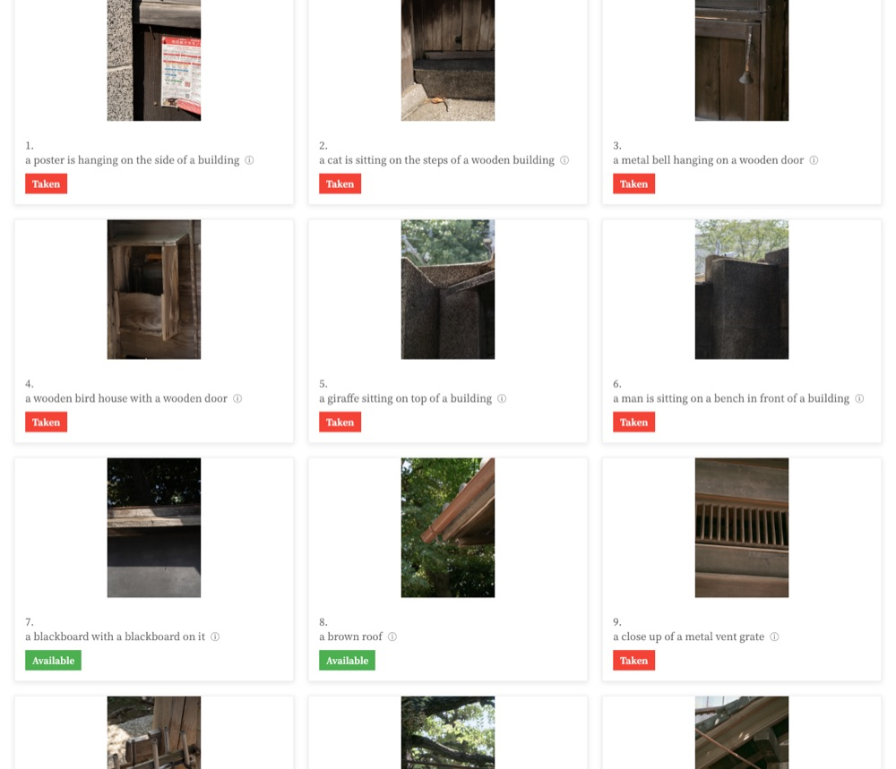
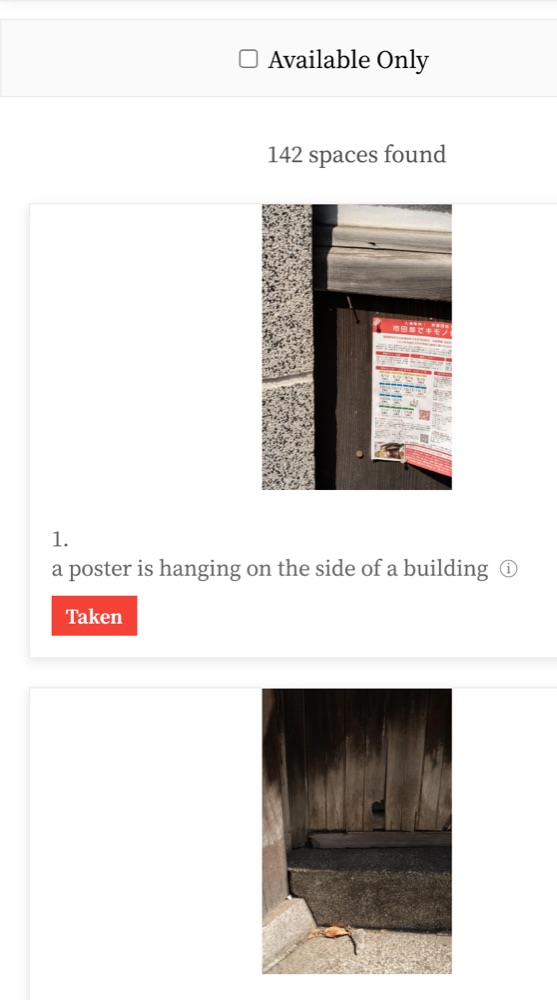

NAI(T/K)ENKAI — an open house where visitors choose a space
誰でも家の中の好きな場所を選び、自分にとって居心地がよくなるものを持ち込む（またはオンラインで送る）展覧会です。作品である必要はなく、条件は「跡を残さないこと」だけ。邢（ハル）は共同企画・ファシリテーションと、ウェブサイトの設計・制作を担当しました。
A Meiji-period heritage house opened to anyone: visitors chose a spot in the house and brought something (or sent data or instructions online) to make it feel their own, leaving no trace. Co-planned and facilitated with Juli Lee; Hal designed and coded the website. GAP M2 Award, Tokyo University of the Arts.
Website and space viewer

家じゅうの「スペース」一覧
家の中の142か所を写真カードにして公開。物件の内見のように、気になる場所を探せます。

空き状況とフィルター
各スペースに「空き／契約済み」を表示。「空きのみ」で、まだ選べる場所だけを絞り込めます。